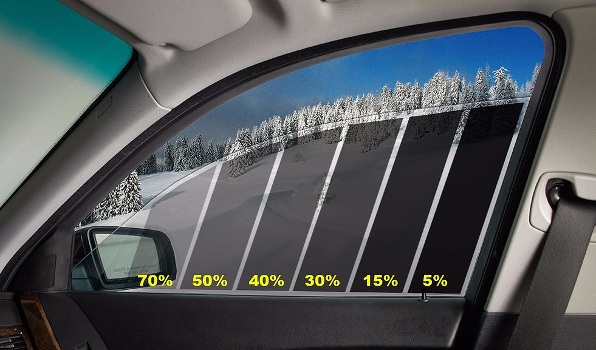

Тонировка стекол
Тонировка стекол – это процесс оклейки стекол автомобиля специальными пленками. Для тонировки могут использоваться как пленки разной степени прозрачности (от 5% до 55%), так и прозрачные атермальные пленки, которые используются для защиты от УФ лучей без изменения внешнего вида автомобиля. Помимо этого возможна оклейка стекол укрепляющими пленками (см. раздел бронирование стекол).
Для чего нужна тонировка
Тонировка стекол автомобилей это:
Защита от УФ лучей
Несмотря на наличие практически у всех современных автомобилей атермального слоя на стеклах, призванного блокировать ультрафиолетовое излучение, штатные стекла даже автомобилей премиум брендов не могут похвастаться полной блокировкой УФ лучей. Тонировочная пленка останавливает 99% УФ излучения, минимализируя риск развития кожных заболеваний, а так же добавляя комфорта водителю и пассажирам автомобиля.
Защита от бликов
Качественные тонировочные пленки не только защищают салон от попадания УФ лучей, но и уменьшают количество бликов, отсветов фар от двигающихся за Вами автомобилей. Отсутствие бликов увеличивают комфорт водителя в ночное время и положительно влияют на безопасность вождения.
Конфиденциальность
К сожалению, сегодня, оставляя на заднем сиденье портфель с документами или сумку, можно прийти к своему автомобилю и обнаружить разбитое стекло и отсутствие ценной вещи. Качественная тонировка стекол максимально ухудшает видимость салона с улицы, при этом максимально сохраняя прозрачность изнутри. Вы сами можете выбрать прозрачность плёнки, в диапазоне от 5% до 55%, плёнка позволит не только убрать лишние взгляды с вашего чемодана или ноутбука, но и защитит от ненужного внимания Ваших пассажиров или домашних любимцев.
| Услуга | Легковые | Внедорожники |
| Задний полукруг | 7 000 | 8 500 |